StatementTeaching philosophyI want to help people become lifelong learners who are curious, ask good questions, and keep looking for answers long after a course or instructor interaction ends. Read the statement
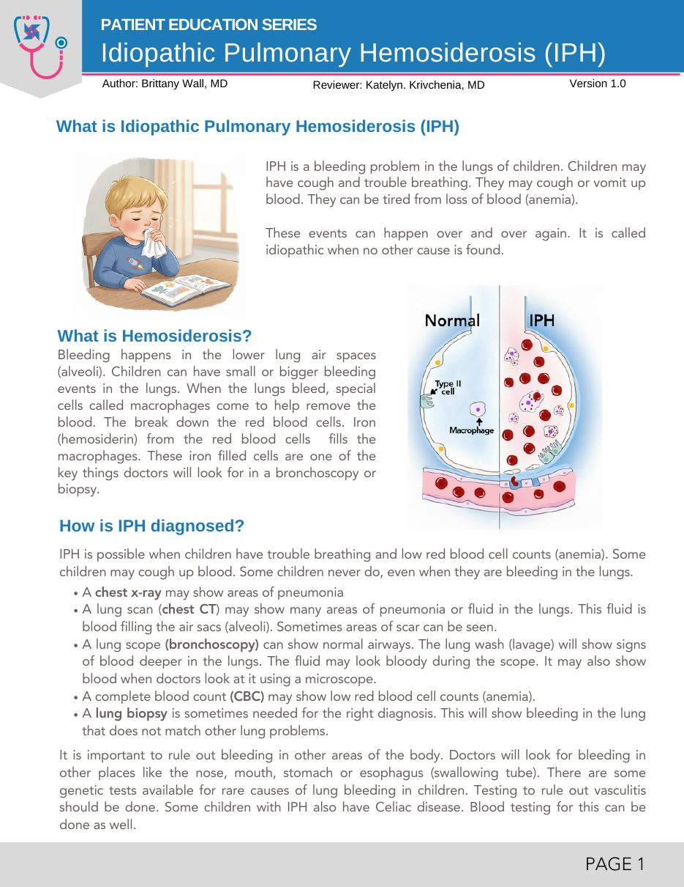 Patient Education SeriesIdiopathic Pulmonary HemosiderosisTwo-page family brochure. I coordinate the series' development and professional review for the chILD Foundation; physician authors write and specialists review each title.
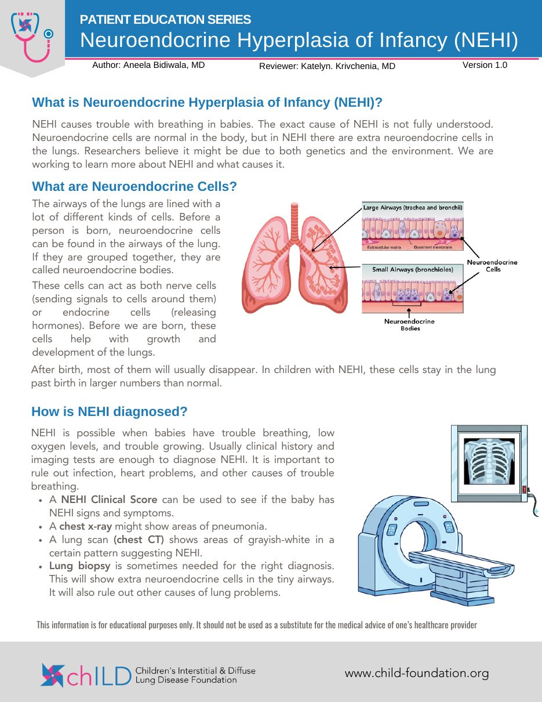 Patient Education SeriesNeuroendocrine Hyperplasia of InfancyA sample from a series of more than 150 patient education modules covering life with different forms of chILD, now in professional review.
Online lesson video, EIPT 6313How We BreatheAnimated lesson introducing breathing and the alveolus, built for an online module on lung development and surfactant.
Online lesson video, EIPT 6313Surface TensionSecond video in the module, explaining surface tension in the lungs and why surfactant matters.
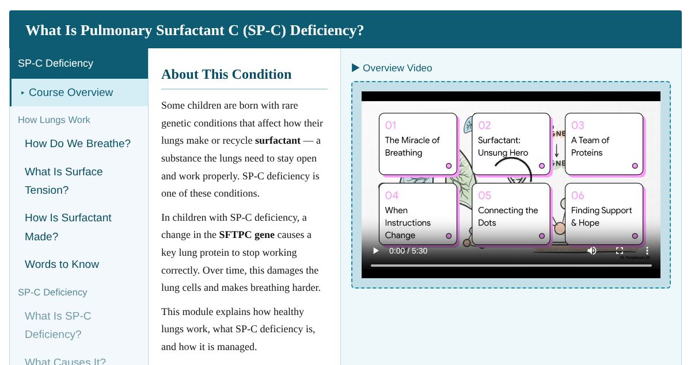 Online patient education course, CanvasWhat Is Pulmonary Surfactant C (SP-C) Deficiency?A Canvas course for families on how the lungs work and on SP-C deficiency, with lesson videos and illustrated pages. Open the course
Websites chILD FoundationI developed the chILD Foundation's new website, which brings family education resources together for families and clinicians. Visit child-foundation.org Pediatric Oxygen ConceptsCompany website for Pediatric Oxygen Concepts, which develops oxygen delivery products designed for children, including the OPOD system. Visit pediatric02concepts.com
Image editingImage seriesOne photograph developed five ways in Photoshop: the original, cross-processing, glowing edges, posterization, and a black-and-white background treatment. 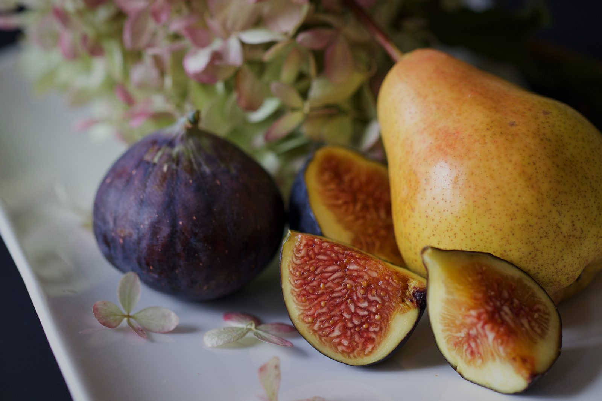Original 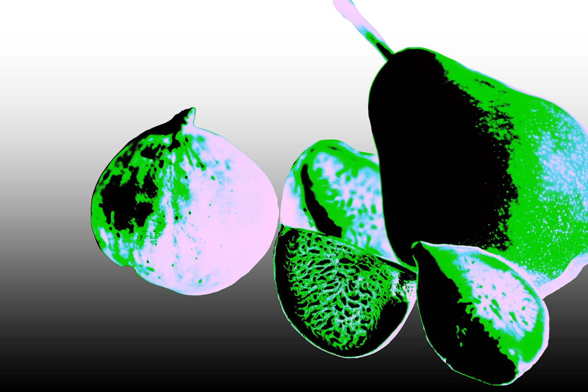Cross process 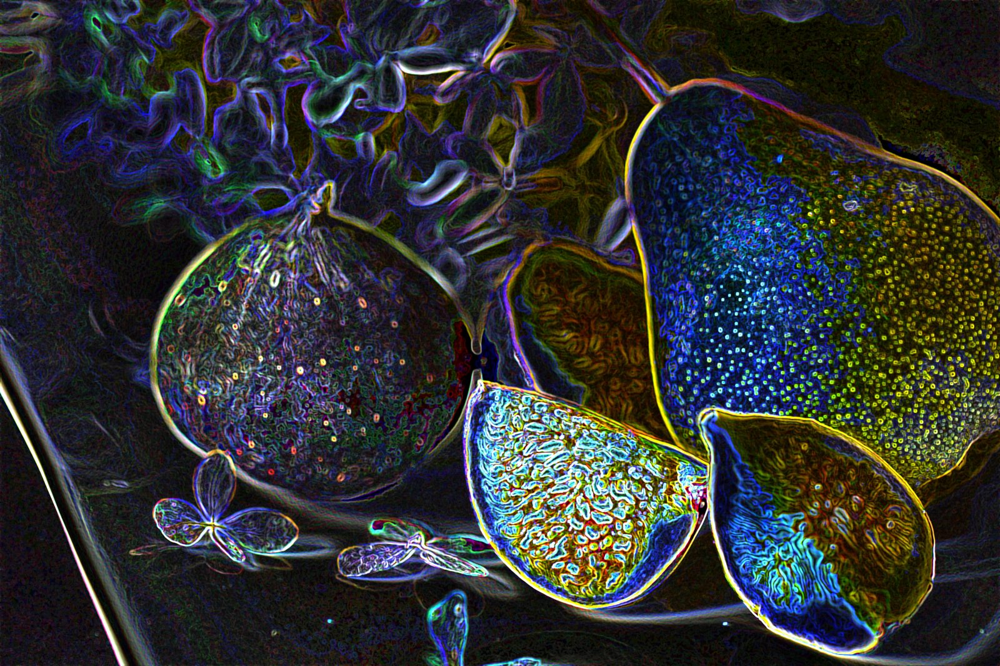Glowing edges 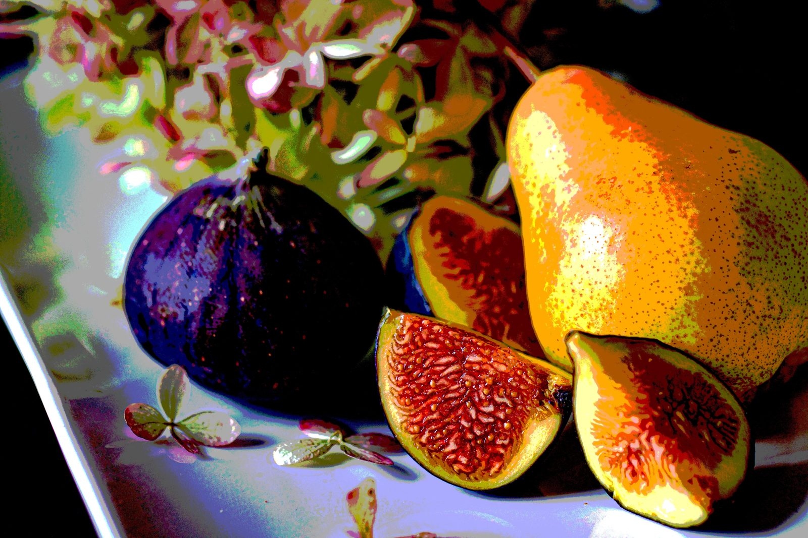Posterized 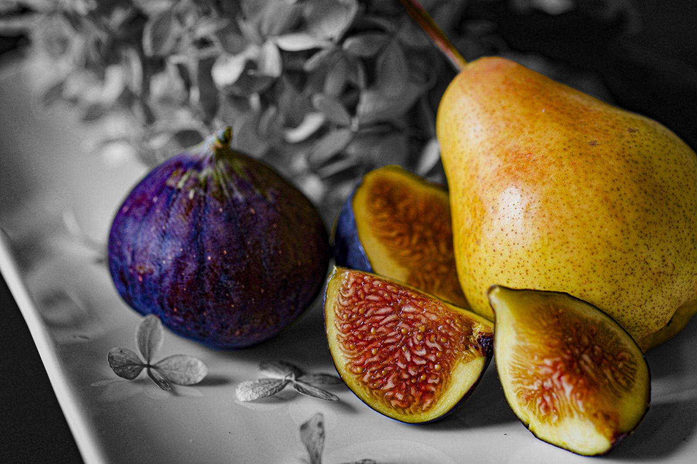Black and white background
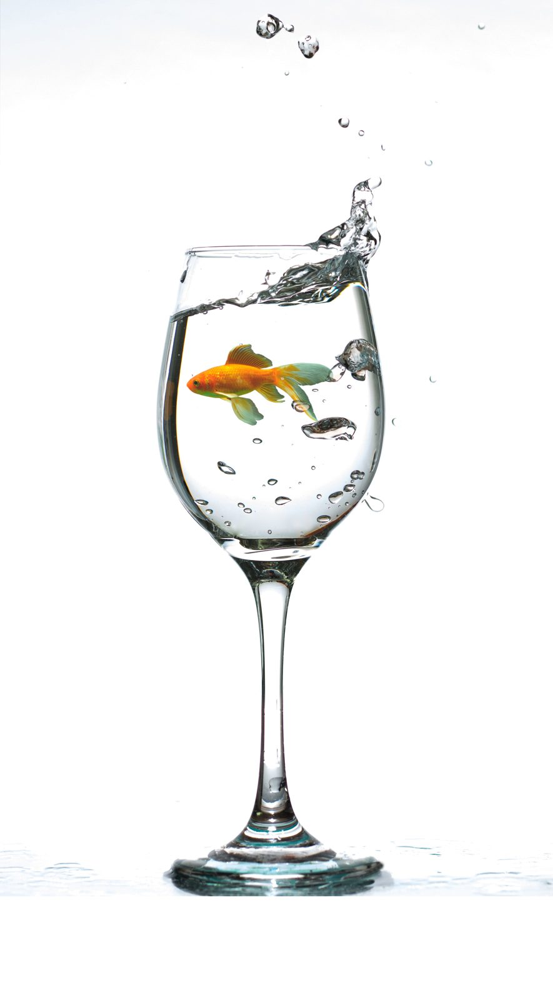 CompositingBackground replacementA subject isolated and placed into a new scene. View original images
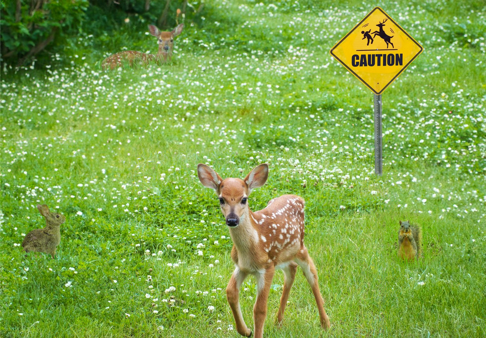 CompositingCollageMultiple source images blended into one scene with matched light and scale. View original images
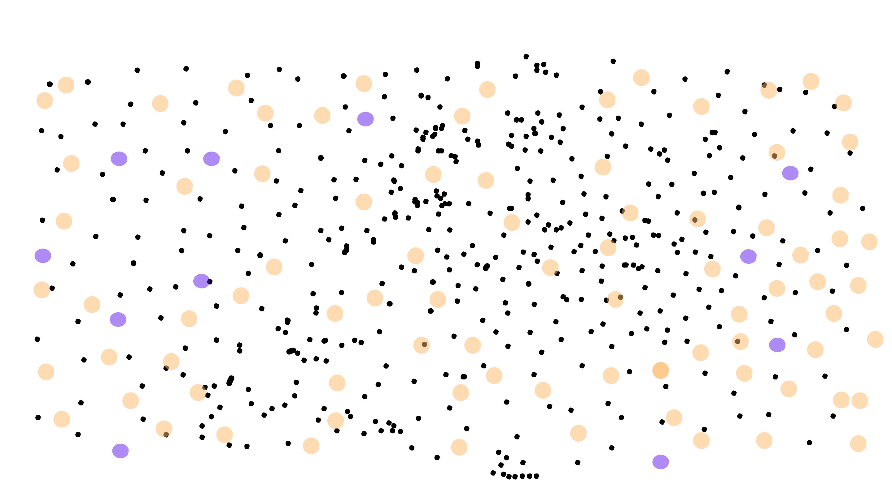 MotionGestalt principlesAn animated demonstration of how the eye groups shapes into a whole.
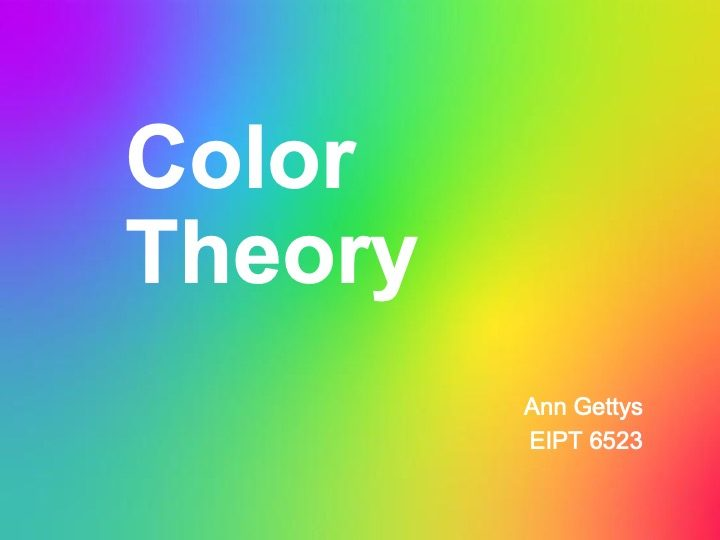 ColorColor theoryNarrated project on primary, secondary, and tertiary colors and how color choices shape meaning. Watch on YouTube
Short videoOxygen Tips and TricksA practical video for parents managing home oxygen: cannulas, tape and skin care, tubing, and keeping small hands away from equipment. Watch on YouTube
Sound designMulti-source soundA short scene layered from several recordings and effects in Adobe Audition.